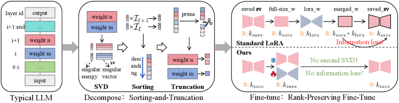

Why it matters왜 중요한가
Every low-rank compressor faces the same fork: give all layers the same rank (uniform) and you waste budget on cheap layers while starving important ones, or learn a per-layer rank and pay a huge search bill. UniRank shows you can get learned-quality allocation for the price of a sort.
모든 저랭크 압축기는 같은 갈림길에 선다: 모든 층에 같은 랭크를 주면(균일) 값싼 층에 예산을 낭비하고 중요한 층은 굶기며, 층별 랭크를 학습하면 막대한 탐색 비용을 치른다. UniRank는 학습 수준의 배분을 "정렬 한 번" 값에 얻을 수 있음을 보인다.
The trick is a physically-motivated importance score that unifies two ideas people usually treat separately — the energy of a singular value within a matrix, and the functional importance of the module that matrix belongs to. Because both live on the same scale, all singular components from all layers can be thrown into one pool, ranked, and cut. That reframes "rank allocation" from a search problem into a sorting problem — which is why it drops from hundreds of hours to minutes.
핵심은 보통 따로 다루던 두 관점 — 행렬 안에서 특이값의 에너지와, 그 행렬이 속한 모듈의 기능적 중요도 — 를 하나로 묶는 물리적 동기의 점수다. 둘이 같은 척도 위에 놓이므로, 모든 층의 모든 특이성분을 한 풀에 넣어 정렬하고 자를 수 있다. 이는 "랭크 배분"을 탐색 문제에서 정렬 문제로 바꾸며, 수백 시간이 수 분으로 줄어드는 이유다.

By the numbers핵심 숫자
Plug-and-play across decomposition schemes분해 방식을 가리지 않는 플러그앤플레이
| Decomp. | Alloc. | Zero-shot WT2 ↓ | FT WT2 ↓ | FT Rea. ↑ |
|---|---|---|---|---|
| SVD | Uniform | 134.68 | 28.57 | 49.20% |
| SVD | +UniRank | 86.20 | 26.10 | 49.50% |
| AFM | Uniform | 43.93 | 23.12 | 52.80% |
| AFM | +UniRank | 28.06 | 22.01 | 53.97% |
| AWSVD | Heuristic | 28.05 | 23.90 | 53.67% |
| AWSVD | +UniRank | 26.75 | 22.89 | 54.02% |
| Dobi | Learning | / | 14.10 | 61.10% |
| Dobi | +UniRank | / | 11.74 | 63.05% |
In one diagram한 장의 그림
The core ideas핵심 아이디어
Two importances on one scale
Each singular component gets a score s = (Iₗ)^α · σ²/‖Σ‖²_F: the Local term is the singular value's energy share inside its matrix, the Global term Iₗ = 1 − 𝔼[cos(fₗ₋₁(x), fₗ(x))] is how much module ℓ actually transforms its input. Both are unit-free, so components from different layers become directly comparable.
각 특이성분은 점수 s = (Iₗ)^α · σ²/‖Σ‖²_F 를 받는다: Local 항은 행렬 안에서 특이값의 에너지 비중, Global 항 Iₗ = 1 − 𝔼[cos(fₗ₋₁(x), fₗ(x))] 은 모듈 ℓ이 입력을 실제로 얼마나 변형하는지다. 둘 다 무차원이라 서로 다른 층의 성분을 직접 비교할 수 있다.
Quiet layers are compressible
In a residual block Y = X + f(X), a high input–output cosine similarity means f(X) is near-zero or collinear with X — either way, low effective rank. So "functionally quiet" layers (output ≈ input) can be truncated aggressively. The paper confirms this with a Pearson r = 0.879 between layer importance and perplexity damage.
잔차 블록 Y = X + f(X)에서 입력–출력 코사인 유사도가 높으면 f(X)가 거의 0이거나 X와 나란하다는 뜻 — 어느 쪽이든 유효 랭크가 낮다. 따라서 "기능적으로 조용한" 층(출력≈입력)은 과감히 잘라도 된다. 논문은 층 중요도와 perplexity 손상 사이 피어슨 r = 0.879로 이를 확인한다.
Allocation = sort + truncate
Pool the scored singular components across every layer and module, sort descending, and keep the top ones until the global rank budget is met (accumulative rank preservation). One pass replaces both hand-tuned rules and expensive learned rank controllers.
모든 층·모듈의 점수화된 특이성분을 한데 모아 내림차순 정렬하고, 전역 랭크 예산을 채울 때까지 상위 것을 남긴다(누적 랭크 보존). 이 한 번의 통과가 수작업 규칙과 값비싼 학습형 랭크 컨트롤러를 모두 대체한다.
Fine-tune without a second SVD
Standard LoRA-then-merge produces a weight of rank > k_save, so it must re-truncate back to budget — discarding the tail energy ∑σ² you just trained. RPFT instead freezes the kept subspace basis and trains a slice inside it, so rank stays exactly k_save: no re-decomposition, no information loss.
표준 LoRA-병합은 랭크 > k_save 인 가중치를 만들어 다시 예산까지 절단해야 하고, 방금 학습한 꼬리 에너지 ∑σ² 를 버린다. RPFT는 남긴 부분공간 기저를 고정하고 그 안의 일부만 학습해 랭크를 정확히 k_save 로 유지한다: 재분해 없음, 정보 손실 없음.
How it works어떻게 작동하나
- Decompose.분해. Factor each weight via SVD (or AFM / AWSVD / a learned scheme) into singular triplets σᵢ·uᵢvᵢᵀ. 각 가중치를 SVD(또는 AFM/AWSVD/학습형)로 특이 삼중항 σᵢ·uᵢvᵢᵀ 로 분해한다.
- Score.점수화. Compute each component's Local energy ratio, and each module's Global functional importance Iₗ from a small calibration set (input–output cosine). 각 성분의 Local 에너지 비율과, 소규모 보정셋으로 각 모듈의 Global 기능적 중요도 Iₗ(입력–출력 코사인)을 계산한다.
- Sort globally.전역 정렬. Pool all components across layers/modules and rank them by s = (Iₗ)^α · σ²/‖Σ‖²_F, descending. 모든 층·모듈의 성분을 모아 s = (Iₗ)^α · σ²/‖Σ‖²_F 로 내림차순 정렬한다.
- Truncate.절단. Keep the top components up to the global budget — this single cut IS the per-layer rank allocation. 전역 예산까지 상위 성분을 남긴다 — 이 한 번의 절단이 곧 층별 랭크 배분이다.
- RPFT (optional).RPFT(선택). Recover accuracy by LoRA-tuning inside the retained subspace, keeping rank fixed at k_save — no re-truncation, no loss. 남긴 부분공간 안에서 LoRA 튜닝으로 정확도를 회복하되 랭크를 k_save 로 고정 — 재절단도, 손실도 없다.
What to take away그래서, 가져갈 것
Rank allocation can be a free byproduct of one global sort (~2 min) yet beat learned allocators that cost 220 GPU-hours — a strong efficiency-vs-quality point for anyone compressing LLMs.
랭크 배분은 한 번의 전역 정렬의 공짜 부산물(~2분)이 될 수 있으면서도 220 GPU-시간짜리 학습형 배분기를 이긴다 — LLM 압축자에게 효율 대 품질의 강력한 논점.
"How much a layer changes its input" (input–output cosine, via the residual Y=X+f(X)) is a cheap, theoretically-grounded proxy for how compressible that layer is.
"층이 입력을 얼마나 바꾸는가"(잔차 Y=X+f(X)의 입력–출력 코사인)는 그 층의 압축 가능성에 대한 값싸고 이론적으로 근거 있는 대리 지표다.
When fine-tuning a compressed model, stay inside the retained subspace: the common merge-then-re-SVD step silently discards the energy you just trained.
압축 모델을 파인튜닝할 땐 남긴 부분공간 안에 머물러라: 흔한 병합-후-재SVD 단계는 방금 학습한 에너지를 조용히 버린다.